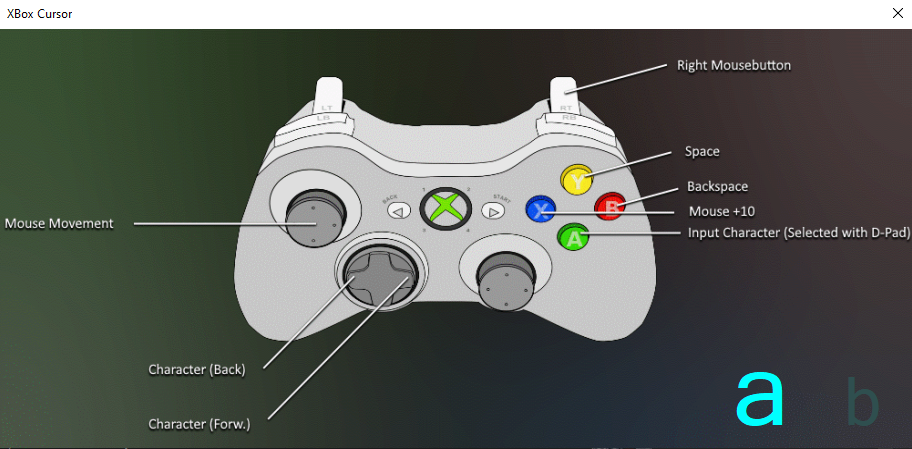

I am paitorocxon. I am a software developer, security researcher, philanthropist and hobby philosopher. I've been developing software since I was 8. Starting with simple HTML pages, through applications, games and my own AI to my own operating system.
I read and love specialist literature, I make music a lot and play various instruments. The biggest contrast about me is probably my preference for jazz and good whiskey in the evening and playing war with weapons and sports during the day. I also have a YouTube channel, why not give it a try?
I love to go to the limit. I hate when someone tells me that something is not possible. There is always a way.
One of my most important principles is "people first, profit later". What is that supposed to mean? Volvo and the three-point seat belt for example! Volvo invented it, but made it available to everyone because they knew it saves lives.
The difference is, I'm not Volvo and I definitely won't save lives. But the sense counts. The attitude of wanting to help people. Because that's what defines each and every one of us computer scientists and software developers, doesn't it?
I started with C.A.R.A (i), a relatively primitive AI, around 2013. First I implemented speech recognition, then a dynamically learning language library, and at some point you could communicate freely with it to a large extent.
Unfortunately, it was destroyed under very mysterious circumstances. (R.I.P. 2013 - 2020)
One of my latest projects is the Toecramp engine. A game engine with controller support, developed 100% in VB.net. Recently I was able to increase the performance by ~ 1000%, which I am very proud of, as there really is no game engine known to me that was developed 100% in VB.Net.
Granted, a lot of my projects are fun projects that are definitely not worth reference.
I have already developed my own operating system 4 times, of which the current one is probably the most acceptable. I've written a lot; Messanger, documentation tools, programming tools, security improvements or any crazy formulas. I am always looking for the extraordinary. You may be asking yourself "Why should you develop a scripting language or game engine in VB.Net? Isn't the language rubbish?" You're right! But that's exactly what makes it so attractive. Always making the best of the worst you can get.
Of course, I'm not just a developer, I'm also a security researcher. I look for weak points and usually fix them. WiFi, websites, apps, computers or networks. Amazing what you can find out about a person just by looking at how they treat their own data ...
Back then, when I was still in vocational training for the job i was in school for, I messed with a very large website host. My intention was not malicious, on the contrary, I was a customer myself. I took a closer look at the problem and the security gap and of course documented it in detail and sent it to the company. It was an absolute struggle to reach any of them. Constantly just rejecting bots or the emails were simply filtered out. So I went to Facebook and wrote to them there. They promised to fix it and would even give me a reward. I refused and thought to myself, "Hey, guys! Send me a postcard from you guys! It's more valuable!". What did i get? The service was stopped, they wanted my personal details and I felt unnecessarily pressured, so I just left all contact. Well, a year later I wanted to see if the vulnerability was still there. Spoiler! The vulnerability was still there! I didn't care from then on. Some time later I learned from the media that they were probably hacked by people who had nothing good in mind. I think that's called karma ...
In short: I'm a weird guy, with weird ideas and definitely weird approaches.
And if you've read this far, don't forget: Computer scientists are the magicians of modern times!
Who am i?
Projects
XBox Cursor
Simple! A tool to use an XBox controller as a mouse and keyboard. Who needs that, mouse and keyboard?

Toecramp-Engine
The Toecramp Engine is a game engine that was developed entirely in VB.Net. Full screen support, controller support, particle system, collision calculations, dynamic sprite database and so on ...
PAIS
Pais is a script / programming language. Nothing special, but it still helped me to think logically and to solve problems that one doesn't otherwise have every day. all in one a nice trip.
PaitCrypt
PaitCrypt is an encryption method developed in C ++ and PHP, in which the sum of the self is encrypted. The idea behind it was that developers could theoretically save the password as plain text and it would still be useless.
Scrap Mechanic Blueprint Importer
The Scrap Mechanic Blueprint Importer tool was a solution to a problem with the now released survival mode in Scrap Mechanic. It converts blueprints so that they lose their static state and can therefore be used dynamically inside the survival mode.
PaitPad
For me, the PaitPad was actually just an alternative to MediaWiki, which at the time had too many functions than I really needed. The same with SESC.
Experience


 And more...
And more...